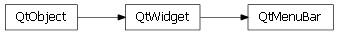

Bases: enaml.widgets.widget.Widget
A widget used as a menu bar in a MainWindow.
A read only property which returns the menu bar’s menus.
alias of __NoInterface__

Bases: enaml.qt.qt_widget.QtWidget
A Qt implementation of an Enaml MenuBar.
Create the underlying menu bar widget.
Initialize the layout for the underlying control.
Handle the child removed event for a QtMenuBar.
Handle the child added event for a QtMenuBar.
Get the QAction instance which comes immediately after the actions of the given child.
| Parameters: | child (QtMenu) – The child menu of interest. |
|---|---|
| Returns: | result (QAction or None) – The QAction which comes immediately after the actions of the given child, or None if no actions follow the child. |

Bases: enaml.wx.wx_widget.WxWidget
A Wx implementation of an Enaml MenuBar.
Create the underlying menu bar widget.
Initialize the layout for the underlying control.
Handle the child removed event for a WxMenuBar.
Handle the child added event for a WxMenuBar.
Get the wxMenu instance which comes immediately after the menu of the given child.
| Parameters: | child (WxMenu) – The child menu of interest. |
|---|---|
| Returns: | result (wxMenu or None) – The wxMenu which comes immediately after the menu of the given child, or None if no menu follows the child. |
Overridden parent class method.
This properly sets the enabled state on a menu bar.
Overrdden parent class method.
This method is a no-op, since a MenuBar cannot change it’s visibility under Wx.